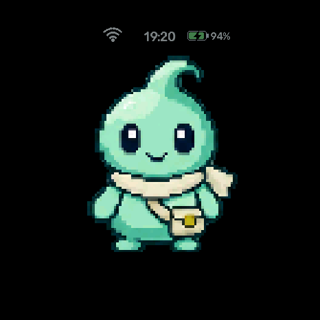

קטן בכיס. פתוח לאפשרויות.
חבר קטן.
אפשרויות גדולות.
דמות עם אופי, קול שמדבר איתך ועוזר שתמיד קרוב.
הכירו את Wappai — העוזר האישי שבונים בדרך שלכם.
מדבר עבריתiOS + Webקוד פתוח

הגרסה הראשונה · Waveshare 1.75C
אותו חבר. בכל מסך.
בכף היד, באייפון ובדפדפן.